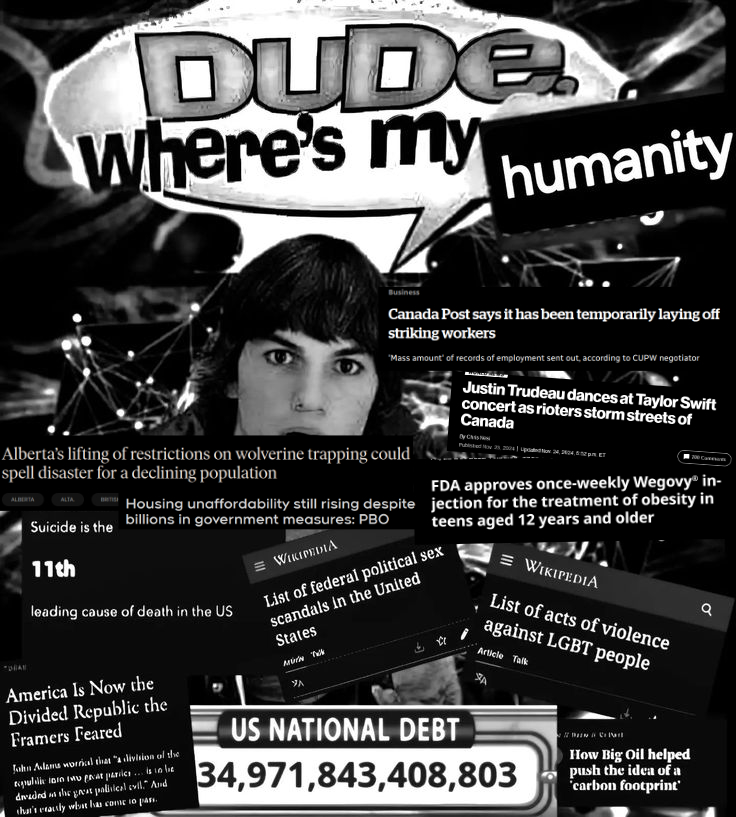
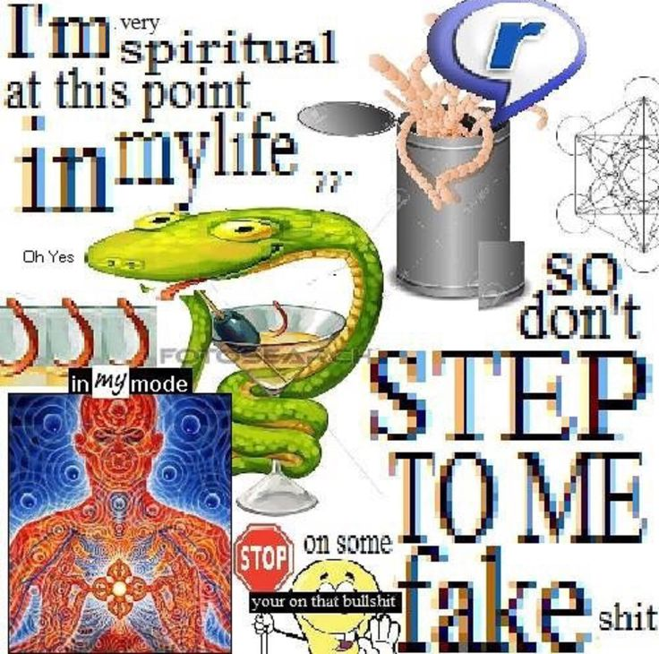
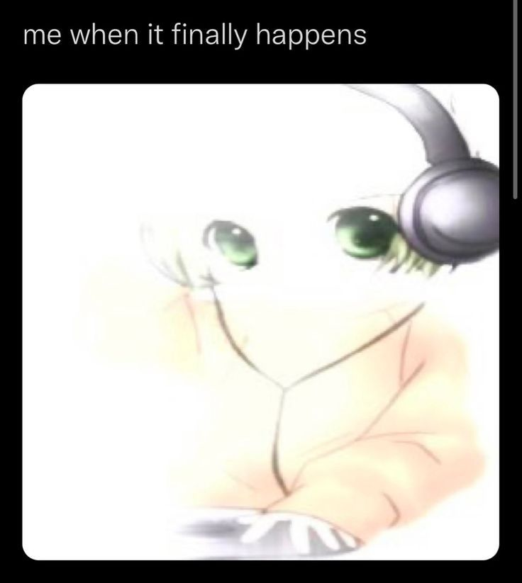
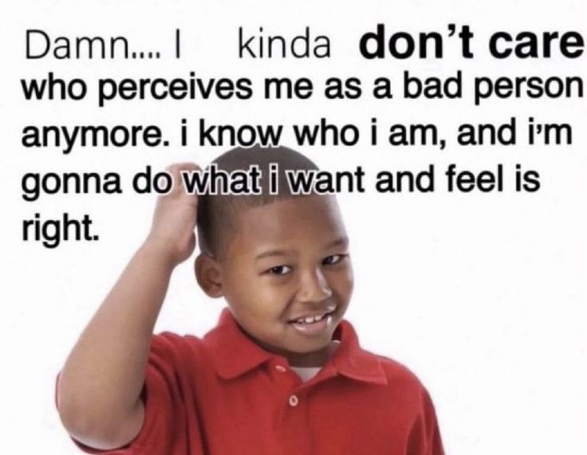
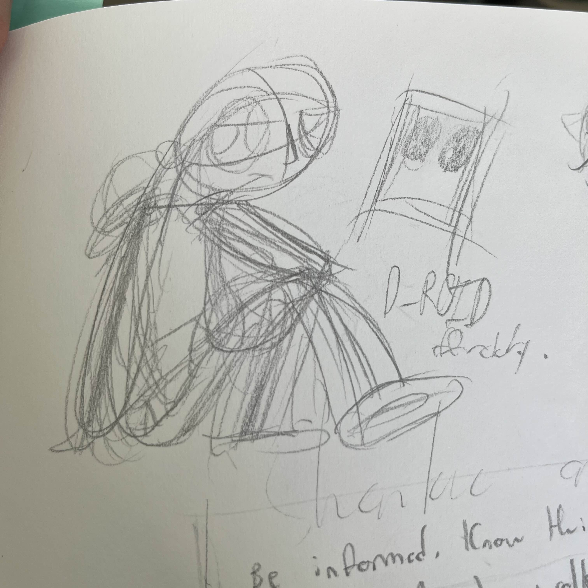
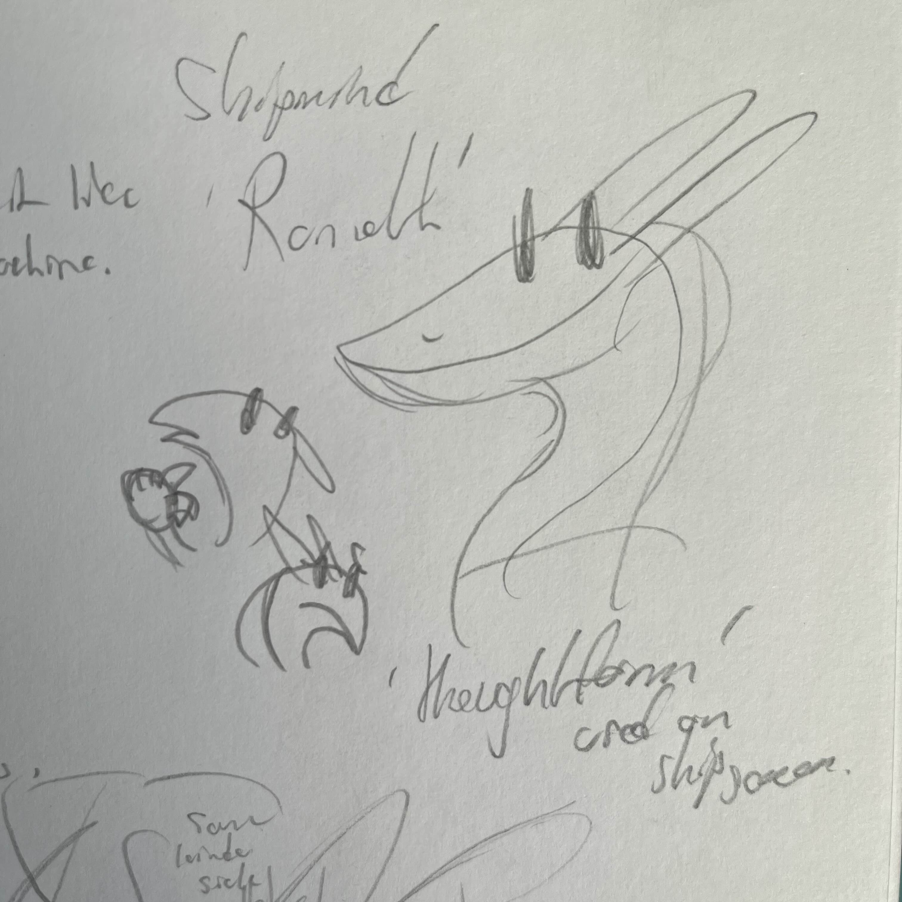
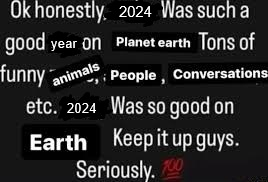

2024 ANNUAL STATE OF THE BADGER ADDRESS
Welcome once again to the 2024 State of the Badger Address, which I have formally renamed this year. For those not familiar, this is, again, my annual new year's feature in which I go over the last year for myself in real-life and in terms of the site, try to make some plans for the next year, and share some artistic snippets of things I've been working on but haven't shared. It's a fun little way to close out the year and I like writing it and I have a lot of free time right now because the job market in Canada is beyond fucked so please buckle in.
This year features all the same features from last year, plus standardizing the 'writing snippet' section into a little showcase of stuff I've been working on. So--here we are:
2024 IN REVIEW
Something I found somewhere with some recent Canadian additions (and the Wegovy thing, which was so sickening I couldn't leave it out) added by myself. You can carbon-date when I edited this based on what the 'worst' part of the treatment of the postal strike was at the time and that Chrystia Freeland's 67-billion-dollar deficit isn't on here.
2024 has felt weird.
Something I've been fascinated by recently is the increasingly large group of young American men who are not only unemployed but also not looking for work probably because I've now been searching for an entry-level temporary job of any sort for 4 months now in my semi-major city and have gotten only a handful of rejection letters back and exactly one phone call (which I couldn't even attend the interview for because it was legitimately outside of the city.) Job scarcity is part of it, but so is the increasing belief among these men that even if you do get a job it'll put you barely above whatever welfare state you were in before while taking away most of your time so, they figure, what's the point? (I've seen this personally with a family friend here in Canada seeking a second part-time job and being worse off than she was before because it cut her off from social benefits she was relying on, and there's a recent CBC story about a family locked out of insulin coverage because their yearly income exceeded the limit by one hundred dollars.) There are a great many articles and books and podcasts and so on by people far smarter than me on the NEET issue but I keep circling back to it in my mind, the idea that there are people (seven million people!) who are turning away from the whole social contract completely because it's reached this point of complete non-viability for them. Are they delusional or are they just saying out loud what everybody's thinking?
Then there's the number of people my age openly supporting terrorism and other violence including a lot of people who I have in the past considered 'friends'. It's scary when someone you know gets radicalized like that because it stops being a difference of politics or whatever and starts being a difference of basic moral beliefs, like "you shouldn't kill people", and it makes you wonder at how they got to that point in such a small time. I don't really believe in the whole 'pipeline' thing because I think it takes personal responsibility away from these types but how do you go down this extreme path willingly, left or right? Poverty or desperation I understand but when it's middle-class white kids in a well-off city in middle Canada it seems not only bizarre but pointless. "I don't like Mondays" comes to mind.
In some ways I get the sense that the world is changing very deeply from the past 50-ish years of history. It feels like end times, not for the world but for something.
I always said that if I could fly-on-the-wall time-travel to any period in history it would be the late-sixties early-seventies when there was so much social change and upheaval, some for the worse, some for the better, mostly for no change at all, but such an energy about things. These days it sometimes feels like I got my wish. Or maybe every generation feels like this, I don't know. I hate it but I love it too.
In the meantime I'm just along for the ride, trying to keep my basic morals intact and follow my religious rules (they're pretty sensible, mostly) and maybe make some good money if I can. Taking the tablets, paying no mind (sleepin' in slime...)

Selections from my 2025 mood/vision/shitpostboard.
In more personal news--of course I finished high school, got accepted into university, had a mental breakdown and went home, and am now starting university x2 combo next year. I've gotten offered admission to one school so far (one that rejected me before, which is funny) and am waiting for the other two (delayed due to postal strike stuff) to let me know. Still planning on majoring in biology with a minor in jack shit, to go into chemical engineering or medicine in the far far future.
Other than the job-search I've been trying to learn to drive, to speak a new language, to draw comics good, to cook and bake and clean better and other housewife-y things. It's good to be as busy as possible and to improve yourself and so on. My dogs have had a very rough go at it this year, with one being diabetic and blind now, and we've had a bunch of other financial and emotional stresses come and go. My paternal grandfather died; it was a strange experience going to his funeral because I feel like I never really got to know him that well compared to my other three still-living grandparents. He was a good man, I think. He liked dogs a lot and worked as a photographer and got to travel all over for it which is pretty neat! And he told good jokes. That's about all I can say about him (so it's a good thing they didn't ask me to do any speeches or anything at the funeral.) There'll probably be a federal election soon and I'll get to vote for the first time, and that's exciting. Finally I will be able to make DEVO proud.
And that's 2024. I wonder what 25's gonna be like? I can only control what I do in it, so here's planning on that:
BADGERSAURUS IN 2025
2025 is another great sci-fi-type year. Full-on cyberpunk shit. I've been coming around to the stereotypical cyberpunk aesthetics even if I still think most of the writing attached is crap.
I didn't get a lot done for the site this year, I think? Mostly just art and the total recode and accompanying rewrites. Which is a fair bit, I guess, especially considering how busy I was earlier.
I'd like to actually get the things I say I get done this year done this year. So here is an easy-to-digest bulleted list which I will be referring back to:
- Urusei Yatsura fanpage, finally--really no excuse for this one. I love this comic and Takahashi's art in general and it got me through some hard shit and I want to finally make some formal notes on it for my own reference mostly. Also I have fancomic ideas and they'll need a home if I ever execute them...
- I'd like for both new buttons to have formal index pages, at least, by the end of the year.
- Filling out the Album Wall. It has sat mostly empty for a good long while now and it is easy to update, I just forget about it sometimes. (Most of the time.) I also have a buncha new spotify playlists that need to go up soon.
- Reorganize the Surfin' page. Right now it is loose and not particularly useful and I could really make it better.
- Ideally I would like to start a certain elaborate Idiot Box subpage at some point this year. I will know what this is and hopefully soon you will, too.
- Finally I'd like to actually start on one of my comic projects--doesn't matter which one but just get some sequential finished art out the door. I've been practicing lots in the meantime to get at least a little decent at rhythm and panelling flow and dialogue organization.
- Bonus Goals: I'd like to hash out a page on my vinyl art toy collection and an analysis of YIIK I.V., if I have the time. I'd like to maybe get around to formalizing some Badgersaurus variants I kick around in my doodles on the About page. A new graphical theme would be cool too.
My kanban board will be tagged and setup properly in preparation and I'll be returning to this page throughout the year to actually stick to this shit. Hold me to it, future me!
2024 NEW YEAR'S RESOLUTIONS IN REVIEW
Last year I committed to accomplishing these things:
More Consistent Website Updates:
????
I guess I didn't do this but senior-year highschool, the recode, and the new graphics seem to me to make up for it. I have been trying to enjoy updating here more and tend to look forward to it when I get in the groove, but keeping it up can be a struggle, especially as my proverbial eyes are much bigger than my coding stomach at times. So I'll be carrying this one over I guess?
Survive the High-School University Transition:
Look I've been over this with you and you and you and her and a psychotherapist. I appreciate the well-wishes from everyone I know IRL and the messages I got from on-line acquaintances through this site and other places. I just don't really want to go over this again.
Be More Punk:
I Am Trying
I am going through it but goddamnit I am trying to be more me. I can't really qualify this but I have been focusing on it in the back of my mind this whole year... It's an ongoing process but I like to think I'm doing it. I want to meet more interesting people and be more interested in them. That's the most important thing: not being an interesting person but being an interested one, who really pays attention to people and things around you... too many people, especially in my generation, are content with just ignoring the world for their little screens and petty dramas and one day they're gonna wake up and realize their whole lives have passed them by. I don't wanna be one of those people. I wanna be an active participant in the world as much as I can... I only got like eighty years here if I'm lucky after all.
2025 NEW YEAR'S RESOLUTIONS
Here are my commitments for the new year:
Work Out Every Day
I've been trying to get better about this but I do have frequent gaps still. Setting a minimum of 15 minutes per-day doing yoga or whatever. I'm buying a membership at a local yoga studio soon so hopefully that will help, I tend to be pretty pragmatic about getting the most out of my money.
More Meaningful Artistic Output
This is a weird one maybe but it's more intended for when I have less free time later in the year. I'd like to write more website updates and work on my longform comics more and practice some more specific artistic skills (shading, figure drawing etc.). I'll still draw lots of dumb crap but I want to be a little more with-it.
Part of this is looking back at this page regularly, which I will be doing on every Sunday as part of my getting-ready-for-the-week routine which I already do.
Learn to cook real good
I've been working on this already but I want to practice recipes more and just dedicate more time to cooking and baking in general. It's a lot of fun and also an important life skill and I feel like I just forget to do it. I'll try to do 5 dinners a week cooked myself but we'll see how it goes.
2024 ARTISTIC SNIPPETS
Here is the artistic snippet for the year, an introduction to what will probably be my first finished comic project thing. It's either this or Genejackets which is more complex but which I'm less attached to and therefore more willing to take a first shitty crack at.
D-ROID is a character who came to me in a dream, as most of my worlds and characters do. This is an interesting artistic dynamic to have with myself because I always feel a bit separated from them even though they are my own creations.
D-ROID is in truth a composite of two people, a human girl called Deanna Dietrich and a Remote Operating Independent Driver, a sort of discontinued nearly-sentient transferrable robot-piloting computer system. (He's a lot simpler than he sounds.)
Together they travel a sorta-far-future universe teeming with alien species in their ship the Bronze Chaser, piloted by very much not sentient navigational AI Ramoth. Hot on their trail is the independent interstellar bountyhunter and Church of Latter-Latter-Day-Saints personality known simply as 'Delta Dawn' and her semi-clever Whippoorwill. She knows as much about D-ROID as they know about her--which is to say, very little.
As you can guess, it's a lite-pulp sci-fi semi-western serial. If that sounds overly complex, it ain't.
'Dee' is a 'modern phantom thief' who makes the world 'better' not through stealing things but through setting things free: people, creatures, information, diseases, one particularly nasty alien parasite on one particularly downtrodden planet she probably shouldn't have... Roid is just along for the ride, a real doormat of a guy (by programming as much as by choice), gentle and sorta naive with a flirty streak. Eventually they become friends and partners-in-crime. You've seen it before, whatever.
D-ROID recycles the setting of an unfinished short story I've been sitting on called Planet Claire, which I might wrap up as prep but probably won't share.
There is a fuckton of alien species, a very complex and somewhat backwards semi-imperial system of organization between them, and a deemphasis on any kind of specific importance between one and the other (humans are as unremarkable as you can get, and so are the giant bloodsucking mantises, the dragon-ferrets, the talking cormorants...) AI is a relatively new sort of existence that is measured not by intelligence but by intersection of intelligence and 'ego', which is one of those sci-fi concepts that is sort of hard to explain in a little blurb but mostly means self-awareness and emotional intelligence. So on and so forth.
I'm planning on maybe 5-7 short standalone comic 'issues' set in this world and a bunch of wiki-type setting writings to go along with it. Don't know if I want to write it as a traditional page-by-page webcomic or issue-by-issue which I've always preferred for reading and story structure. We shall see.
THANK YOU!
Another year of Badgersaurus has come and gone and I still appreciate all of the pageviews, questions and genuine interest I get in this dumb little project. Views are bullshit but Neocities says I hit 100k this year, which is craaazy anyway you slice it.
I continue to advocate against social media especially as it's adverse effects have become clearer and clearer in the real world as of late. I saw someone somewhere some time ago say that 'social media is to modern democracies what opium was to 19th-century China' and it has really stuck with me. It is eating our society from the inside-out and making nearly every aspect of our existence worse for literally no gain, and people talk about it like it's just some unavoidable factor of life and not a deeply harmful addictive psuedodrug specially engineered by the world's top neuropsychologists to make people (especially teenage girls) suicidal, violent, or suicidally violent. Don't I sound like a conspiracy theorist? But it's all true.
This year I have done a lot of stickering around my hometown--mostly local political messaging not worth sharing--but one thing I have been trying to do is direct people to various anti-addiction resources and to Neocities itself. It's silly, but if one person thinks twice the next time they pull out their phone, I've done something good, I figure. Here's one design I made:
You can download the PNG and printable PDF files here. Feel free to do whatever you want with this, no linkback needed. It's good for covering up QR codes, advertising links, and things like that.
Thank you all for your continued support--both in terms of the website and in terms of real-life emotional support--and see you in the new year!